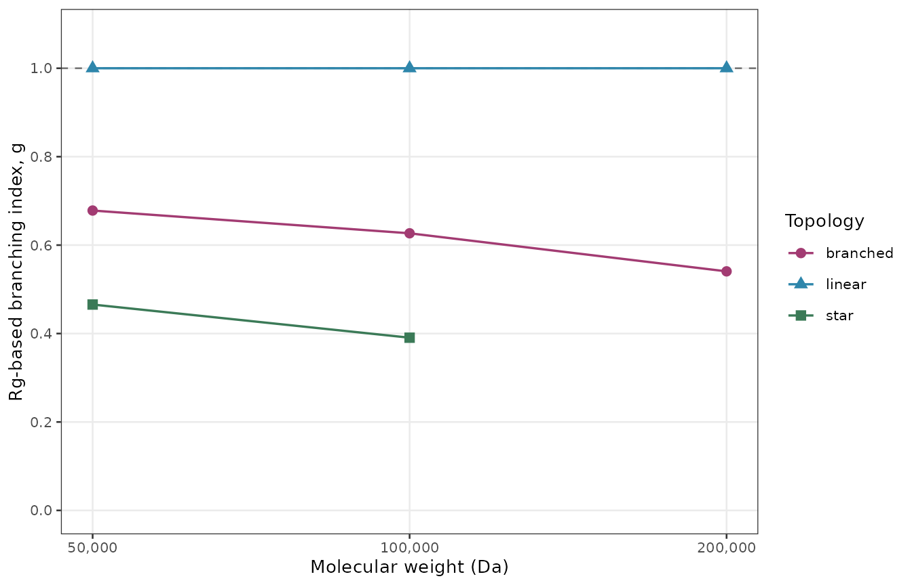
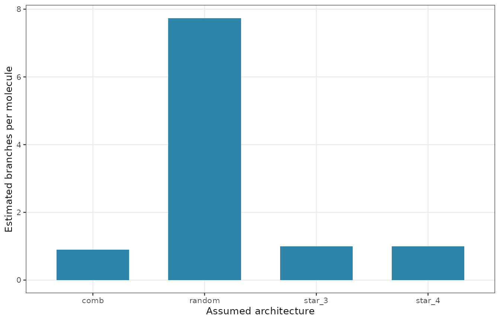
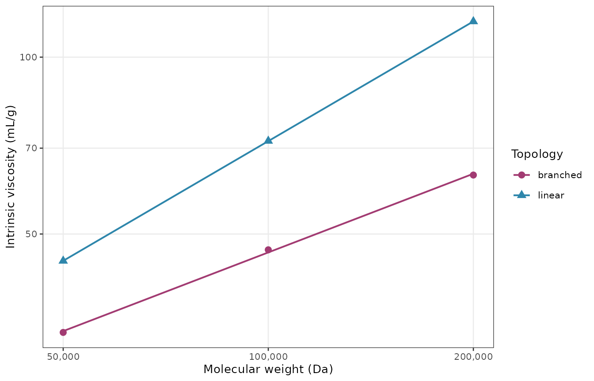
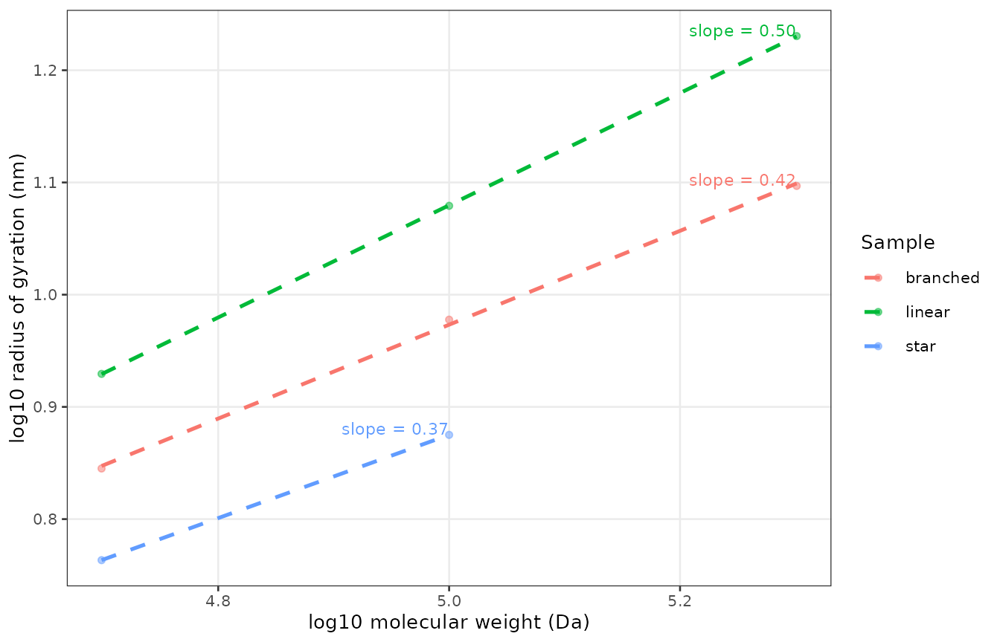

Scope
This vignette uses sec_branched, a synthetic dataset.
Each sample has fixed molecular weight, radius of gyration, and
intrinsic viscosity values repeated on its elution-time rows. The
calculations below reduce those rows to one record per sample before
fitting or plotting.
The dataset includes a simulated MALS signal and supplied
rg values. The current step_sec_mals()
implementation uses a single-angle approximation; it does not fit
multi-angle data or calculate radius of gyration. The examples here pass
the supplied rg and intrinsic-viscosity values to the
branching functions.
Branching indices compare a sample with a linear reference at matching molecular weight. Estimates of branches per molecule also depend on the architecture model supplied to the function.
Data and sample-level properties
library(measure)
#> Loading required package: recipes
#> Loading required package: dplyr
#>
#> Attaching package: 'dplyr'
#> The following objects are masked from 'package:stats':
#>
#> filter, lag
#> The following objects are masked from 'package:base':
#>
#> intersect, setdiff, setequal, union
#>
#> Attaching package: 'recipes'
#> The following object is masked from 'package:stats':
#>
#> step
library(measure.sec)
library(dplyr)
library(ggplot2)
data(sec_branched, package = "measure.sec")
sample_properties <- sec_branched |>
distinct(sample_id, topology, mw, branching_index, rg, intrinsic_visc) |>
arrange(mw, topology)
sample_properties
#> # A tibble: 8 × 6
#> sample_id topology mw branching_index rg intrinsic_visc
#> <chr> <chr> <dbl> <dbl> <dbl> <dbl>
#> 1 Branch-50K branched 50000 0.75 7 34
#> 2 Linear-50K linear 50000 1 8.5 45
#> 3 Star-50K star 50000 0.6 5.8 27
#> 4 Branch-100K branched 100000 0.65 9.5 47
#> 5 Linear-100K linear 100000 1 12 72
#> 6 Star-100K star 100000 0.5 7.5 36
#> 7 Branch-200K branched 200000 0.55 12.5 63
#> 8 Linear-200K linear 200000 1 17 115The branching_index column is supplied with the example
data. The next section calculates the Rg-based index g from
rg and an interpolated linear reference. These are separate
quantities: g uses radius of gyration, while the supplied
index is based on intrinsic viscosity.
Rg-based branching index
For a sample and linear reference at the same molecular weight,
measure_branching_index() calculates
A value below 1 means the sample has a smaller radius of gyration than the reference at that molecular weight. The interpretation depends on the quality and range of the reference data; this example uses only the three supplied linear reference values.
linear_ref <- sample_properties |>
filter(topology == "linear") |>
select(mw, rg) |>
arrange(mw)
branch100 <- sample_properties |>
filter(sample_id == "Branch-100K")
g_result <- measure_branching_index(
mw = branch100$mw,
rg = branch100$rg,
reference = linear_ref,
method = "g"
)
print(g_result)
#> Branching Analysis Results
#> ==================================================
#>
#> MW Range: 100000 - 100000
#> g (Rg ratio): 0.627 - 0.627 (mean: 0.627)
#>
#> Estimated branches/molecule: 2.6 - 2.6
#>
#> # A tibble: 1 × 2
#> mw g
#> <dbl> <dbl>
#> 1 100000 0.627
branching_results <- sample_properties |>
mutate(
g = vapply(
seq_len(nrow(sample_properties)),
function(i) {
measure_branching_index(
mw = sample_properties$mw[i],
rg = sample_properties$rg[i],
reference = linear_ref,
method = "g"
)$g[[1]]
},
numeric(1)
)
)
branching_results
#> # A tibble: 8 × 7
#> sample_id topology mw branching_index rg intrinsic_visc g
#> <chr> <chr> <dbl> <dbl> <dbl> <dbl> <dbl>
#> 1 Branch-50K branched 50000 0.75 7 34 0.678
#> 2 Linear-50K linear 50000 1 8.5 45 1
#> 3 Star-50K star 50000 0.6 5.8 27 0.466
#> 4 Branch-100K branched 100000 0.65 9.5 47 0.627
#> 5 Linear-100K linear 100000 1 12 72 1
#> 6 Star-100K star 100000 0.5 7.5 36 0.391
#> 7 Branch-200K branched 200000 0.55 12.5 63 0.541
#> 8 Linear-200K linear 200000 1 17 115 1
ggplot(
branching_results,
aes(x = mw, y = g, colour = topology, shape = topology)
) +
geom_hline(yintercept = 1, linetype = "dashed", colour = "grey45") +
geom_line(aes(group = topology), linewidth = 0.6) +
geom_point(size = 2.4) +
scale_x_log10(labels = scales::label_comma()) +
scale_y_continuous(limits = c(0, 1.08), breaks = seq(0, 1, by = 0.2)) +
scale_colour_manual(
values = c(linear = "#2E86AB", branched = "#A23B72", star = "#3B7A57")
) +
labs(
x = "Molecular weight (Da)",
y = "Rg-based branching index, g",
colour = "Topology",
shape = "Topology"
) +
theme_measure_sec()
Rg-based branching index calculated from the synthetic sample-level properties and the supplied linear reference. The dashed line marks g = 1, the linear-reference value.
Branch-count estimates depend on architecture
measure_branching_frequency() maps g to
branches per molecule under a specified architecture. Here, the same
g value from Branch-100K is passed to four
models. The results are model-dependent estimates, not direct counts of
branch points.
g_for_frequency <- g_result$g[[1]]
architectures <- c("random", "star_3", "star_4", "comb")
frequency_results <- tibble::tibble(
architecture = architectures,
branches_per_molecule = vapply(
architectures,
function(architecture) {
measure_branching_frequency(
g = g_for_frequency,
architecture = architecture
)$branches_per_molecule[[1]]
},
numeric(1)
)
)
frequency_results
#> # A tibble: 4 × 2
#> architecture branches_per_molecule
#> <chr> <dbl>
#> 1 random 7.74
#> 2 star_3 1
#> 3 star_4 1
#> 4 comb 0.893
ggplot(
frequency_results,
aes(x = architecture, y = branches_per_molecule)
) +
geom_col(width = 0.65, fill = "#2E86AB") +
labs(
x = "Assumed architecture",
y = "Estimated branches per molecule"
) +
theme_measure_sec()
Branch-count estimates for the Branch-100K g value under four
architecture assumptions. Each bar is the result returned by
measure_branching_frequency() for that model.
Mark-Houwink relationship
The Mark-Houwink equation relates intrinsic viscosity to molecular weight:
The exponent depends on the polymer, solvent, temperature, and molecular-weight range. The points below use the sample-level values in the synthetic dataset; lines are descriptive log-log fits for the linear and branched samples.
linear_data <- sample_properties |>
filter(topology == "linear", intrinsic_visc > 0)
mh <- measure_mh_parameters(
mw = linear_data$mw,
intrinsic_visc = linear_data$intrinsic_visc
)
print(mh)
#> Mark-Houwink Parameters
#> ========================================
#>
#> K = 2.9716e-02
#> a = 0.677
#>
#> R-squared: 1.0000
#> Data points: 3
#> MW range: 50000 - 200000
#>
#> Equation: [eta] = K * M^a
mh_comparison <- sample_properties |>
filter(topology %in% c("linear", "branched"))
ggplot(
mh_comparison,
aes(x = mw, y = intrinsic_visc, colour = topology, shape = topology)
) +
geom_point(size = 2.5) +
geom_smooth(
method = "lm",
formula = y ~ x,
se = FALSE,
linewidth = 0.7
) +
scale_x_log10(labels = scales::label_comma()) +
scale_y_log10() +
scale_colour_manual(
values = c(linear = "#2E86AB", branched = "#A23B72")
) +
labs(
x = "Molecular weight (Da)",
y = "Intrinsic viscosity (mL/g)",
colour = "Topology",
shape = "Topology"
) +
theme_measure_sec()
Sample-level intrinsic viscosity values and log-log linear fits for the supplied linear and branched examples. Each point is one distinct sample, not one elution-time row.
Radius-of-gyration scaling
measure_rg_mw_scaling() fits the supplied
linear-reference values. The fitted slope summarizes this three-point
synthetic example; it is not a validated polymer or solvent
parameter.
rg_scaling <- measure_rg_mw_scaling(
mw = linear_data$mw,
rg = linear_data$rg
)
print(rg_scaling)
#> Rg-MW Scaling Analysis
#> ========================================
#>
#> Scaling Law: Rg = K * M^nu
#>
#> nu (Flory exponent): 0.500
#> 95% CI: [0.482, 0.518]
#> K (prefactor): 3.7991e-02
#>
#> Conformation: theta solvent (ideal chain)
#>
#> R-squared: 1.0000
#> Data points: 3
#> MW range: 50000 - 200000plot_sec_conformation() can show the log-log
relationships and fitted slopes for each topology. Its slope labels
summarize the values provided in sec_branched.
plot_sec_conformation(
sample_properties,
type = "rg_mw",
mw_col = "mw",
y_col = "rg",
sample_id = "topology",
show_fit = TRUE,
show_exponent = TRUE
) +
labs(
x = "log10 molecular weight (Da)",
y = "log10 radius of gyration (nm)"
) +
guides(colour = guide_legend(override.aes = list(label = ""))) +
theme_measure_sec()
Log-log relationship between molecular weight and radius of gyration for the synthetic samples. Dashed lines and slope labels summarize a separate fit for each topology.
Comparing branching models
measure_branching_model_comparison() also compares the
Rg-based values with model predictions. The input uses one value per
branched sample.
branched_results <- branching_results |>
filter(topology == "branched")
model_comparison <- measure_branching_model_comparison(
g = branched_results$g,
mw = branched_results$mw
)
print(model_comparison)
#> Branching Model Comparison
#> ============================================================
#>
#> Model Fit Summary:
#> ------------------------------------------------------------
#> model parameter r_squared rmse aic
#> random 0.081065607 0.3718183 0.04497206 -6.096652
#> star 1.908302743 -0.9517182 0.07926997 -2.695745
#> comb 0.008636979 -0.6021841 0.07182181 -3.287772
#> hyperbranched 0.160125834 0.2410091 0.04943316 -5.529171
#> ------------------------------------------------------------
#>
#> Best Model: random (lowest AIC)
#> R-squared: 0.3718
#> RMSE: 0.0450
#> Parameter: 0.0811
#>
#> Note: Lower AIC indicates better fit with penalty for complexity.
#> Consider physical plausibility when selecting the final model.See also
- Getting started — basic SEC workflow
- Multi-detector SEC — detector processing and limits
- SEC analysis reference — function reference
Session info
sessionInfo()
#> R version 4.6.2 (2026-10-29)
#> Platform: x86_64-pc-linux-gnu
#> Running under: Ubuntu 26.04.1 LTS
#>
#> Matrix products: default
#> BLAS: /usr/lib/x86_64-linux-gnu/openblas-pthread/libblas.so.3
#> LAPACK: /usr/lib/x86_64-linux-gnu/openblas-pthread/libopenblasp-r0.3.32.so; LAPACK version 3.12.0
#>
#> locale:
#> [1] LC_CTYPE=C.UTF-8 LC_NUMERIC=C LC_TIME=C.UTF-8
#> [4] LC_COLLATE=C.UTF-8 LC_MONETARY=C.UTF-8 LC_MESSAGES=C.UTF-8
#> [7] LC_PAPER=C.UTF-8 LC_NAME=C LC_ADDRESS=C
#> [10] LC_TELEPHONE=C LC_MEASUREMENT=C.UTF-8 LC_IDENTIFICATION=C
#>
#> time zone: UTC
#> tzcode source: system (glibc)
#>
#> attached base packages:
#> [1] stats graphics grDevices utils datasets methods base
#>
#> other attached packages:
#> [1] ggplot2_4.0.4 measure.sec_0.0.0.9000 measure_0.0.1.9004
#> [4] recipes_1.4.0 dplyr_1.2.1
#>
#> loaded via a namespace (and not attached):
#> [1] gtable_0.3.6 xfun_0.62 bslib_0.12.0
#> [4] lattice_0.23-1 vctrs_0.7.3 tools_4.6.2
#> [7] generics_0.1.4 stats4_4.6.2 parallel_4.6.2
#> [10] tibble_3.3.1 pkgconfig_2.0.3 Matrix_1.7-6
#> [13] data.table_1.18.6.1 RColorBrewer_1.1-3 S7_0.2.2
#> [16] desc_1.4.3 lifecycle_1.0.5 compiler_4.6.2
#> [19] farver_2.1.2 textshaping_1.0.5 codetools_0.2-20
#> [22] htmltools_0.5.9 class_7.3-24 sass_0.4.10
#> [25] yaml_2.3.12 prodlim_2026.03.11 tidyr_1.3.2
#> [28] pillar_1.11.1 pkgdown_2.2.1 jquerylib_0.1.4
#> [31] MASS_7.3-66 cachem_1.1.0 gower_1.0.2
#> [34] rpart_4.1.27 nlme_3.1-171 parallelly_1.50.0
#> [37] lava_1.11 tidyselect_1.2.1 digest_0.6.39
#> [40] future_1.82.0 purrr_1.2.2 listenv_1.1.0
#> [43] labeling_0.4.3 splines_4.6.2 fastmap_1.2.0
#> [46] grid_4.6.2 cli_3.6.6 magrittr_2.0.5
#> [49] utf8_1.2.6 survival_3.8-12 future.apply_1.21.0
#> [52] withr_3.0.3 scales_1.4.0 lubridate_1.9.5
#> [55] timechange_0.4.0 rmarkdown_2.32 globals_0.20.0
#> [58] otel_0.3.0 nnet_7.3-21 timeDate_4052.112
#> [61] ragg_1.5.2 evaluate_1.0.5 knitr_1.52
#> [64] hardhat_1.4.3 mgcv_1.9-4 rlang_1.3.0
#> [67] Rcpp_1.1.2 glue_1.8.1 ipred_0.9-16
#> [70] jsonlite_2.0.0 R6_2.6.1 systemfonts_1.3.3
#> [73] fs_2.1.0